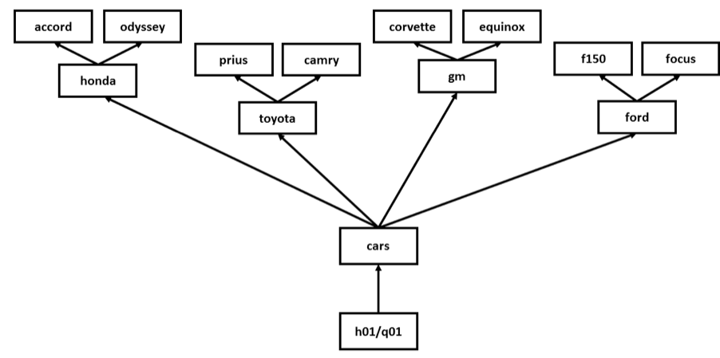

2.2. Homework 01: Linux Basics
Assignment Instruction
Follow instructions: Read, interpret, and follow instructions very carefully. Finish reading the whole question and note the requirements before you start working on the question.
Use resources: You may use any resources available to you via the web. You are encouraged to discuss the problems with others before you sit down and attempt to answer the questions.
Work independently: While you are completing the questions, you are expected to work on your own without direct help from other people (non-human resources such as search engines are still allowed).
Work together: Come to the office hours to work as a group on the interpretation of and solutions to questions. When using text messaging, attach screenshots.
For introduction to basic Linux and shell commands and special characters, see: - Linux & shell basic commands - Linux & shell special characters
Getting Started
class directory: To begin this assignment, make sure you navigate into the class directory under your user home directory.
scp the tar file: Use scp to copy the tar file h01.tar.gz from datacenter@tychen.us to your ~/class directory. The command is:
` scp datacenter@tychen.us:~/class/hw/h01.tar.gz . `(### don’t forget the “ . ” at the end of the command) and the password is “InCharge56!”unzip the tar file: Extract the contents of the tar file:
` tar -xf h01.tar.gz `Once the files are extracted, you should see the h01 folder (a directory containing several directories and files) in your class directory. These are the files you need to complete this assignment.h01: Unless otherwise specified in the question, all file names are given relative to the directory
~/class/h01.Passwords: All the account names and the corresponding passwords are recorded in Canvas Assignment a00, where you keep them updated.
When You Are Done
When you have completed the assignment:
done.sh: Run the script done.sh in ~/class as follows:
` ./done.sh firstname lastname h01 `(The done.sh script is part of Assignment h01.)hwk01.txt: The done.sh script will check your answers and create a new .txt called hwk01.txt in the h01 directory that you will need to submit to Canvas for assignment h01.
Download hwk01.txt to submit to Canvas: From your local computer terminal (cmd or PowerShell for Windows and Terminal for macOS), change into a folder (e.g., cd Documents to go into your Documents folder). Use the scp command to copy your submission file from your VM to your local computer’s Documents folder:
` scp YOUR_USERNAME@YOUR_VM_IP_ADDRESS:~/class/h01/hwk01.txt . `
Note: You can run the done.sh script at any point when you are working on the assignment and the content of the generated hwk01.txt may be helpful in addition to the check scripts in each question. However, you must run it just prior to submitting the generated hwk01.txt file in your class/h01 directory to Canvas to make sure you are submitting the most recent file.
Note: To see your VM’s IP address, run ip addr or ifconfig (installation of net-tools required).
Question 1. Creating Directories and Files
Within your ~/class/h01/q01 directory, create the following directory structure and files (see the directory structure below):
Create the following subdirectories:
cars
cars/honda
cars/gm
cars/toyota
cars/ford
Create the following files in the subdirectories:

cars/honda/accord
cars/honda/odyssey
cars/toyota/prius
cars/toyota/camry
cars/ford/f150
cars/ford/focus
cars/gm/equinox
cars/gm/corvette
When you have completed this activity, you can run the program
check01.shto check your work. Run it by issuing:` ./check01.sh `(# “ . “ means the current directory while “ / “ is a delimiter/separator. ./check01.sh tells the Unix-like operating system to run the specified executable script in the current directory.)
Once you are satisfied that everything is correct, enter the word “DONE” on the line starting with “A.” in h01/q01/a01.txt. Leave a space after “A.” and before “DONE”.
Note:
We use the mkdir (“make directory”) command to create directories and the touch command to create empty files (the syntax is touch file_name; issue the command in the appropriate directory).
Question 2. Change Directory
Navigating around directories in the Linux file system (the Linux filesystem directory structure). Within the h01/q02 directory, which of the following pathnames will move you to your “home directory” when using the cd (change directory) command before it? Assuming your class directory is located in your user home directory and you are starting in your class/h01/q02 directory.
~/class
../../../
../../
/home
~/class/..
Record your answers in h01/q02/a02.txt. Enter T for those that do, and F for those that don’t. Leave a space after the dot and before T and F.
Note:
By your home directory we are referring to the user home directory of the current logged in user, not the system home directory (/home) that contains all the user home directories.
CTL+Oin nano: It is convenient to open and tile two terminals so you can test out the command and path in one and record your answers at the same time in the other. When doing so, you would want to save the file being edited by usingCTL+Oin nano to save the file without exiting.cd tricks:
cd -will bring you back to the previous directory that you were in andcd ~will bring you back to your user home.
Question 3. Listing Files
Assuming that:
you have installed the files from h01.tar.gz.
your current working directory is
~/class/h01/q03,you completed question 1 correctly, and
which of the following pathnames refers to an existing file?
~/class/done.sh../q01/cars/class/h01../a03.txt/home
Record your answers in h01/q03/a03.txt. Enter
Tfor those that are existing files, andFfor those that are not existing files.
Note:
In Linux, there’s no difference between directory and file. re: tldp.org: “On a UNIX system, everything is a file; if something is not a file, it is a process.”
It is suggested that you use the command ls to perform this task although you may use cd to navigate to the directories and then ls to check if the file exists.
Question 4. Resource vs. Process
Identify each of the following as either an information system resource or process for the MST website by entering either Resource or Process after the corresponding letter.
The computer used for the www.mst.edu web server
Updating the student directory information
The MST webmaster
The MST network used to access www.mst.edu
Creating the MST News and Events stories
Record your answers in h01/q04/a04.txt.
Note:
Tell the difference between organizational resources and processes
Question 5. Full/Absolute Path vs. Relative Path
For each of the pathnames given below, answer T if the pathname is an absolute(full) path; answer F if the entry is a relative pathname.
//var/logh01/q03/a03.txt/home/st01/class/h01../q02
Record your answers in h01/q05/a05.txt.
Note:
Absolute (Full) Path and Relative Path in Linux file system are two ways to specify a file.
An absolute (full) path has an absolute reference point, the root directory:
/